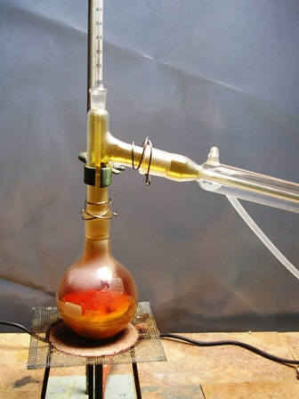
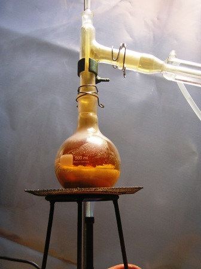
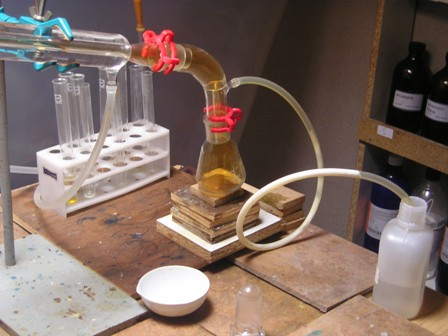

In un laboratorio di chimica sperimentale bene organizzato, i reagenti (quelli che le persone comuni chiamano "le sostanze"), dovrebbero essere talmente numerosi da rasentare l'assurdo, per permettere (almeno in teoria) di progettare una qualsiasi reazione che capitasse di dover fare.
E' evidente che questo caso limite non esiste, tanto meno nella realtà hobbistica come la mia, nella quale i reagenti presenti, pur essendo un discreto numero, sono sempre inesorabilmente di gran lunga meno numerosi di quelli che vorrei.
Può succedere che ci sia magari una bottiglietta contenente una sostanza rara ed esotica e contemporaneamente che manchi un reagente importante e fondamentale; ma in fin dei conti, non essendoci alcuna finalità professionale, tutto fa parte del gioco, il quale è destinato a far sempre a pugni con le scarse risorse disponibili!
Dicevo dunque dei reagenti: ci sono delle sostanze che in qualsiasi laboratorio chimico non possono mancare; sostanze senza le quali nemmeno si comincia a parlare di chimica.
Ma quali sono le più importanti?
Se dovessi per forza sceglierne solo tre sulle migliaia possibili direi: acido solforico, acido cloridrico, acido nitrico.
La perfetta Triade! Un lab senza questi acidi sarebbe come un panificio che pretendesse di fare il pane senza acqua, farina e lievito...
E' possibile farsi in casa questi acidi? La risposta è sicuramente NO per l'acido solforico, SI' per gli altri due, ma il lavoro è conveniente solo per casi particolari.
Per esempio, un caso particolare per certe reazioni organiche è la necessità di avere acido nitrico concentratissimo (circa al 95-96%) mentre commercialmente lo si trova comunemente al 65-67%; come risolvere il problema?
O lo si compra (opzione totalmente esclusa, l'HNO3 al 96% è molto costoso!) oppure... lo si fa. Ecco come:

Materiale necessario:
- Potassio nitrato KNO3
- Acido solforico H2SO4
- vetreria opportuna
Stavolta occorre fare una sottolineatura sul termine "opportuna": la vetreria deve essere categoricamente "normalizzata", ovvero di qualità e con tutti i giunti di vetro smerigliato di dimensioni standard, per assicurare una tenuta perfetta; niente deve essere di gomma, plastica o materiali non resistenti alla potentissima aggressività dell'acido nitrico concentrato. La semplice reazione da sfruttare sarà la seguente:
KNO3 + H2SO4 --> KHSO4 + HNO3
- In un pallone da 500 ml introdurre 100 g di KNO3 e 100 ml (184 g) di H2SO4 concentrato. L'acido solforico è in grande eccesso (quasi il doppio) rispetto alla quantità stechiometrica e serve per trattenere il più possibile l'acqua derivante dalla decompozione dell'acido nitrico. Agitare brevemente il pallone e chiudere immediatamente predisponendo il tutto per la distillazione, con adatto termometro e refrigerante Liebig.

Scaldando cautamente a piccolissima fiamma la miscela acido/sale si osserverà lo sviluppo di biossido d'azoto NO2 (o ipoazotide, un gas colore rosso bruno dovuto alla parziale decomposizione dell'HNO3) e pian piano superati di poco gli 80° l'acido formatosi comincerà a condensare nel refigerante e nella beuta di raccolta come un liquido giallino.
E' opportuno collegare con un tubetto siliconico la codetta di sfiato del beccuccio del Liebig ad un recipiente di neutralizzazione contenente una soluzione di NaOH, in modo che nell'ambiente non venga rialsciato alcun vapore acido.

Tutto deve potere essere svolto con la massima tranquillità e sicurezza.Durante la distillazione la temperatura tende a salire fin oltre i 100°; smettere la distillazione quando si sono raccolti poco più di 35 ml di HNO3; questo si presenta come un liquido giallo (il colore deriva dagli ossidi d'azoto che contiene in soluzione) fumante all'aria, estremamente irritante, corrosivo e pericoloso, da trattarsi quindi con le massime precauzioni, e va conservato in una bottiglia con tappo smerigliato.

Il peso di 10 ml esatti è stato di 15 g, quindi l'acido ottenuto in questo modo ha densità 1,5 - corrispondente ad una concentrazione del 96%, esattamente come mi ero proposto di ottenere.
Quest'acido mi è poi servito per la nitrazione dell'anidride ftalica (ved. luminol); il rimanente servirà per altre nitrazioni toste, nei casi in cui è difficile introdurre un nitrogruppo -NO2 in una molecola se non si ha a disposizione HNO3 quasi al 100%.